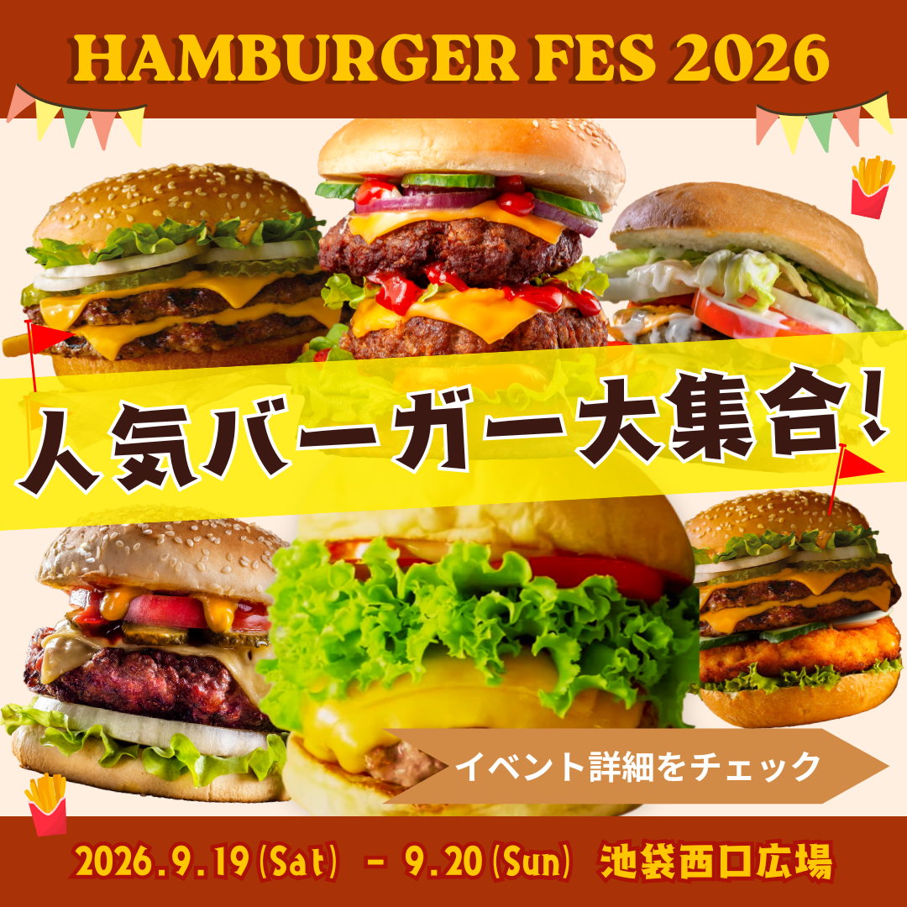

架空のグルメイベント「ハンバーガーフェス」のバナーを作成。
担当
デザイン
サイトの目的
ハンバーガーフェスへの来場とイベント認知度の向上。
Instagramフィード広告を想定し、ハンバーガーフェスのメインターゲットであるグルメ好きな男性と、トレンドに敏感な20~30代女性それぞれに対するバナーを作成。
使用技術
Canva
デザインについて
1枚目：ハンバーガーのおいしさやボリューム感が一目で伝わることを重視して制作しました。
写真を大きく配置し、シズル感を前面に出すことで、「食べたい！」と思ってもらえることを狙っています。
2枚目：nstagramで見かける投稿を意識して制作しました。
1枚目でイベントに興味を持ってもらい、2枚目以降で各ハンバーガーを紹介するカルーセル投稿を想定しています。